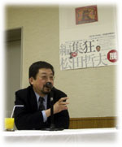
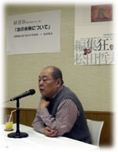
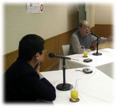

|
■編集者のクセ
松田 津野海太郎さんはもともと晶文社の編集者です。晶文社の本といえば、今の４０代、５０代の人にはすごく思い入れがあって、企画もさることながら、装幀からはじまって、見出しの付け方とか、図版の入れ方とか、ちょっとしたところまで気を配っていて、あこがれたもんです。その中心を担っていたのが津野さんということは知っていました。最初に会ったのが十数年前ですよね。「女性のための編集者学校」がはじまったとき。
津野 そうですね。ブロンズ新社の若月眞知子さんが、「女性のための編集者学校」をはじめて、ぼくがまず呼ばれて講師をやりました。やるんだったらワークショップがやりたくて、初めは一生懸命なんだけど、だんだん飽きてしまって、松田さんに講師を引き受けてもらった。
松田 津野さんは自分でやって飽きるとぼくに押し付けるというくせがあって（笑）、この間もある大学の出版文化論という講義をぼくにバトンタッチしたんです。今もまた次のことを押し付けようとしてる気配があるので、逃げようとしてるんですけど（笑）。津野さんとはその編集者学校の引き継ぎのときに、1回酒を飲んだくらいですね。
津野 すれ違った程度でしたね。ただ、ぼくのほうは松田さんのイメージはありました。「ガロ」から漫画全集を作るために筑摩書房の人になったらしい、ということは聞いていた。ずっとあとになりますが、荻窪の本屋で『ちくま文学の森』を見てびっくりした覚えがあります。そのあとの文庫版の『ちくま日本文学全集』も、本当にびっくりしました。筑摩の伝統と蓄積をうまく使って新しい何かをつくっていく。しかも帯から何からシャープで本の上りがものすごくきれい。ぼくは自分にあんまり能力がないですから、非常に優れた人を見ると、一緒に何かをやりたくなるんですね。で、編集者学校によんでみたくなった。
そのとき松田さんが生徒に配ったプリントをぼくにもくれたんです。ひとつは「文学の森」の企画案。これは実際に仕事に使ったノートのコピー。びっしりと作品名とかタイトル案が書いてある。もうひとつは、二十代そこそこで筑摩に入ったときに、筑摩の本を何十冊も調べて、字のポイントや余白など組版のパターンを表にしたもの。ぼくはそういう綿密なことは一切しませんから、あ然とするくらいびっくりしました。その二枚の紙をもらったことは、松田哲夫のイメージを決定的なものにした。そういう紙がとってあるのが信じられないんですけど。全部とっとくの？（笑）

松田 だいぶ捨ててますけどね。でも、物をとっておかないと、歴史が失われていくんじゃないかという思いはあります。言葉で整理しちゃうと抜け落ちていっちゃうものが結構あるんですよね。
組版は、最初は好奇心から手元にある本を片っ端から百冊くらい調べたら、５０か６０のパターンがあった。パターンが集まると、ある傾向が見えてくる。平均的なものはこうで、こういうこともありなんだとか。原稿枚数が多いのにパラッとしか組んでいなくて、何も考えないで組版を選んでる人がいたり、確信犯的な人がいたり、編集者のくせがよくわかる。組版ひとつとっても、編集するおもしろさがあるんです。
■「本とコンピュータ」について
松田 数年前に、津野さんが「本とコンピュータ」という雑誌を一緒にやらないかと声をかけてくれた。津野さんの著書『本とコンピューター』『本はどのように消えていくのか』の２冊は、鮮烈にいろんなことを考えさせてもらった本でした。
津野 ぼくは８０年代の終りぐらいからマッキントッシュでＤＴＰをやりはじめました。活版印刷の時代は、最終段階になると編集者が印刷屋さんにいって、現場の職人さんたちとあれこれ交渉しながら本を作る。印刷の世界と編集の世界はほぼ重なり合っていたわけです。二十年くらいたつうちに、印刷技術がものすごい勢いで進んできて、だんだんブラックボックスになってしまった。ＤＴＰだと、印刷がもう一度自分たちの手の届く範囲、可視的な領域に入ってくる。それがひとつのきっかけではじめたんです。
出版は古い業界ですから、コンピューターに触れたらきれいな魂が汚れると思うような人がいっぱいいた。関心を持つことすら反人間的だというような状態がずっと続いていました。一方でコンピューターを使って本を作る動きははじまっていた。印刷、紙の出版、電子的な出版が、お互い何の関係もないままに進んでいった。
ぼくは三つの世界が一緒に何かできないか、お互いのやってきたことを教え合うとか、技術を共有し合うとか、そういう仕組みが作れないかと思ったわけです。研究会とかシンポジウムをやるより、自分たちが慣れている雑誌で、そのような仕組みをつくりたかった。で、その雑誌のために、勘ですごいんじゃないかと思っていた二人に声をかけて、快諾していただいた。紙の本の世界では松田さん。デジタルの世界では、ＣＤ-ＲＯＭや本を作るソフトウェアの開発を主にやっているボイジャーという会社の萩野正昭さん。ちょうど大日本印刷が何かやりませんかと声をかけてくださったんで、渡りに船ということではじめたわけです。
松田 ぼくは、ちょうど編集長をしていた「頓智」が廃刊になって、ひまになったところでした（笑）。パソコンは使っていたんですけど、ＤＴＰはわからないし、本気で本とコンピューターというテーマを考えたことはなかったんですが、出版界でコンピューターのことをやっている人は少なかったもんですから、先駆者として名前が売れるかなと（笑）。最先端のところで勉強させてもらえたことに感謝しています。コンピューターは、編集的なセンスとか、本をどうつくるかという基本のところがしっかりしていれば、非常に便利なツールになる気はしました。
津野 そうですね。雑誌をはじめた９７年は、インターネットもだいぶ定着してきたし、マルチメディア出版が盛りの時期でした。ぼくたちの雑誌も、はじめは夢のあるものをつくりたい、これを使って何かおもしろいことをやれるんじゃないかと思っていました。
でも雑誌の創刊のちょっと前に消費税が５％にあがった。それで各出版社に返本がわっと流れ込んできて、出版界がガタガタガタと崩れていったんです。出版界の落ち込みと雑誌「本とコンピュータ」の５年間は重なっているんです。
そして同じように伸びはじめた電子出版が、出版社が落ちていく勢いに巻き込まれた。出版社は目前の危機からのがれようと、すぐ結果の出ることを考えます。そのための道具として電子化を使いはじめたんですね。コスト削減とか、あわよくば儲けられるんじゃないかとか、そういう理由で飛び付きはじめた。どういうおもしろい世界が開かれるかには頭がいかないわけね。
だけど、今すぐ儲けたいと突っ走ったものは、全部失敗するわけです。人が読んだり見たりする道具の電子化は、まだまだ長いレンジで見なければできない。今は出版界の危機に引きずりこまれている状態。瓦礫の下から、本の未来を電子化との関係で拾い出すのはたいへんです。

松田 いま思えば、創刊当時は夢がありましたね。出版界はこの５年間、マイナス成長です。最近、他業種から出版界で社長になった人が、出版業界は１５％前後の需給ギャップがあるというんですね。ほかの業界では、需給ギャップがあるのに物をつくり続けることはありえない。車だったら工場をとめる、あるいはレイオフして需給ギャップを埋めるわけです。どうして出版界ってつぶれないんでしょうねと言われました。
出版社はお金をつくるためにどんどん本をつくるし、書店はどんどん返品する。悪循環なのはだれもがわかっていて、だれも変えられない。でも、相当限界に来てると思います。こう言うとひんしゅくを買うんですが、ぼくはあらゆる本の定価を3倍にしろと言ってるんです。本は映画とかＣＤに比べて安すぎる。高くして、お金を出す価値のある本だけ残ればいい。暴論なんですけど、そのぐらいに思ったほうがいい。
津野 だいたいそうだと思いますね。旧来の出版人がやっていることは武士の商法みたいなもので、それが崩れはじめています。でも千載一遇というか、こういう場に立ち合うことができたのはおもしろい。会社と会社の壁、専門と専門の壁、大出版社と小出版社の壁が、信じられないくらい薄くなっている。この状態が進んでいく中から、新しい形が出てくるだろうという気がするんです。
ひとつは出版点数が落ちていく。去年は７万点を越えましたけど、ぼくが編集の仕事をはじめた３７、３８年前は２万３千点くらい。ものを書く人間とか、編集者の供給がこのくらいで、それ以上は水ぶくれでしょう。２万点になったとしても、日本の文化的な状態は支えられるだろうと思います。
■電子の本と紙の本
津野 それと同時に、インターネットに集積されるデジタルなデータの量は否応なしに増えて、質もよくなってきている。その勢いは止めることはできないだろう。では、ネット上のデジタルな情報を売ることができるかというと、ダメなんですね。５年間、雑誌をやっていく中で、電子化された百科事典や小説を売ることにアタックしてはつぶれ、アタックしてつぶれる様子を報告してきました。紙に印刷したものをインターネットで売ることはできる。だけど、中味にはお金を払わない。インターネットはただという考え方があまりにも強く人の中に入っていますから、お金を出して買うという習慣が根付かない。世界大百科事典はＣＤ‐ＲＯＭですら売れなかった。その状態はたぶん変わらない。すさまじい量の情報が蓄積されているけれども、今までの出版業界はその部分にはなかなか立ち入ることができない。
松田さんたちも加わっていらっしゃる「電子文庫パブリ」（出版社主体の電子書店）のように、絶版にしたものを電子化して売るのもむずかしいだろうという気がします。「ニューヨークタイムズ」みたいな新聞でも、有料化ではじめて、結局は撤退していく。世界的にどこもそうだと思います。インターネット上の無料のコンテンツを使って、劣勢に立った出版を立てなおす方法は、当分の間ないと思うんですね。
松田 その手前のところでいうと、インターネットがお金になるかどうかという以前に、これだけの量の情報が瞬時に手に入ることは今までなかった。１人１人に編集的なセンスがないと使いこなせないわけです。まちがった選択をしていけば、とてつもないまちがった結論にいってしまう恐れもある。活字の本は電子的なメディアと違って、紙の上に定着されて、重版になっても情報は変わらない。見識と経験をもってつくっているわけで、情報を定着させることの意味はすごくあると思うんです。その価値はこれからもなくならないと思いますし、紙の本のかわりを電子出版がやることはありえないと思うんですね。
「電子文庫パブリ」では絶版本をあつかっています。新刊だと取次や書店からクレームがかもしれないので。でもいろいろな可能性は秘めているかな、と思っているんです。たとえば絶版本から電子本をつくるには、普通の本を一冊つくるくらいお金がかかる。原価回収すらできないんです。ところが新刊と同時にやると、新刊プラス２、３万円、最大５万円あればできちゃうわけです。
だからデータだけでいいという人には、そこそこのお金でわける。やっぱり本の形がいいという人にはオンデマンド出版がある。重版も簡単にできる。データも長く保存ができる。紙の本、オンデマンド本、データ販売の３つが、ひとつのデータのもとにつながっていれば、無駄な本をつくらなくていいし、読者がいつでも手に入れられるという道をひらくんじゃないかなという期待はあります。
津野 電子的なもの、紙の本じゃない領域は、金儲けができるかもしれないという思惑で近づいても必ず失敗しますから、切り離しちゃったほうがいいというのがぼくの意見なんです。紙の本は今よりもていねいにつくって高い値段で売る。いろんなものを切り落としちゃったあとの２万点、３万点の本の世界をちゃんとやっていくのが理想的という気がするんですね。そして、今までの出版のやり方ではできない未開の広野については、おもしろい使い方を考えていく。うかつに出版社みたいな素人が入っていくと、間にハードメーカーとか余計なものがどんどん入ってきます。金をとろう、金をとろうとしますから、どんどんもうけられて、元も子もなくなってしまう。
松田 ウォークマンが出てきたおかげで音楽の聴き方が変わったように、非常に軽くて持ち歩きができる端末ができて、パソコンの画面で読むのとは違う読むスタイルが出る可能性はあると思うんです。今年から来年にかけて、ＮＴＴドコモがＰＤＡで電子書店をやる。ある意味ではインターネットと同じで、ただのような顔をして通話料でお金が落ちていくというものです。大手の家電メーカーでは、読書専用端末を開発中で、来年春くらいには出るということです。今までの紙の本がそれにかわれるわけではないと思いますが、読書端末、携帯端末で読む習慣が生まれてこないとも限らない。老眼世代になってくると、パソコンで文字の倍率を上げて原稿を書くと、すごく楽でいいんですよね。若者の読書離れが救えると思うのではなくて、これから年をとっていく我々にとって救いになるかもしれない。
津野 ぼくはそれには半分は賛成で半分は反対なんです。マイクロソフトとアドビがｅブックリーダーという仕組みにのっとって、インターネットをつないでデータをとりよせる読書用端末を開発しています。あるいはｅペーパーというのは、くにゃくにゃと柔らかくて字が表示できる、紙みたいな画面のコンピューターです。そういうものが商品化して、あと１０年すれば紙にとって変わるんじゃないかと言われています。去年から今年にかけて、ある種の焦点になってきている。ぼくはうそだと思うんです。
今まで、実現する実現すると言われてきて、おもちゃみたいなものしか出てこない。コンピューターの世界では、物は商品としてしか出てこない。ぼくたちは雑誌をやってますから、いろいろなものを調べたり、現場でインタビューしたりしますけど、企業秘密だから内実は一切わからない。こんなにすごいものができる、という宣伝はガンガン流されて、それが実際には出てこないから、期待した分だけ失望がたまる。出版界はこの５年間、ハードメーカーにふりまわされてきたんじゃないでしょうか。
コンピューターで本は読めます。だけど、読むことができないという気持ちが読者のなかに根強い。自分たちの心や体が受け入れている、本を読むという仕組みからあまりにもずれるからです。ぼくもあれを本だと思わないんですね。本をコンピューターで読もうとすると、まず情報がデジタルで蓄積され続けて、いつでもだれでも利用可能な状態で保存されていなくちゃいけない。そうなっていたとしても、生理としてコンピューターで本は読めないとなると、読むということに対する情熱がなくなってくる。
だから逆説的ですが、ぼくはコンピューターで本を読むということに、いまはタッチしないほうがいいという気がする。コンピューターで本を読むということを商売にするな、と。本は紙で読んでいればいい。そのかわり、金もうけとは違うレベルで知恵を注ぎこんで、５０年くらいたってから新しいビジネスを立ち上げた方がいい。今すぐ、どうこうなるという話は一切信じないほうがいい。出版社も損するし、人の関心をそらしてしまう。理想主義的ですけどね。
松田 ぼくはそれほど悲観的ではなくて、電子書店で本が数冊しかおいてなかったらだれも買いにこないけど、今の大型店くらいの量のデータがあれば、もっと利用されると思うんですね。そして、利用しながら、どういう使い方がいいかを考えていく。汎用性のあるデータをどう次世代に残していくかということをきちんと考えなくてはいけない。去年出した本のデータがない、なんてこともあるんですから。「電子文庫パブリ」は、出版社が前面に出て相当痛い思いをしてるんですけども、ハードメーカーや役人に任せていたことを自分たちがやろうとしたことは、次への大きな踏み石にはなってると思います。そろそろ時間ですが、津野さん、紙の本はなくなりますかね？
津野 紙の本は消えようがないでしょう。本は読みながら自分の世界を作れますよね。トイレにいようと風呂場にいようと、昔の人とでも、遠くにいる人とでも、ひとつの世界をつくることができる。これは印刷した紙を綴じた本以外は無理なんですね。そういうものがないと困るという人が生きる限りは、続くと思います。ただ問題は、中国１３億、インド９億の民がみんな私たちみたいに紙を使ったらどうなるのか。紙は木からつくるわけですから限界があります。だから紙が使えなくなるんじゃないか、その恐怖感がずっとあります。その問題がなければ、紙の本は続くと考えています。

|